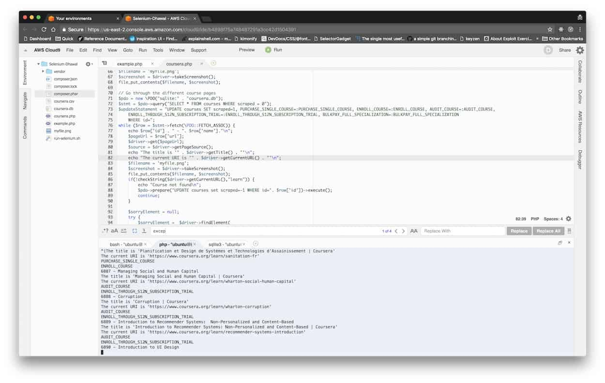

[2023] 1600+ कौरसेरा पाठ्यक्रम जो अभी भी पूरी तरह से निःशुल्क हैं
क्या आप जानते हैं कौरसेरा के कई कोर्स हैं जो अभी भी पूरी तरह से निःशुल्क हैं?

क्या कौरसेरा फ्री है?
Are Coursera courses still free? At क्लास सेंट्रल , we get that question so often that I wrote a मार्गदर्शक to answer it. Generally speaking, Coursera courses are free to audit, but if you want to access graded assignments or earn a Course Certificate, you will need to pay. This change was first की घोषणा की in October 2015, and went live in January 2016.
लेकिन मुझे हमेशा से पता था कि कुछ कोर्स ऐसे भी हैं जो अभी भी पूरी तरह से फ्री हैं।
It can be tricky to figure out which courses have this option. This is because Coursera is a single page app, and the information is only available once you’re logged in. So instead of going through each course one by one and then clicking on enroll, I decided to use सेलेनियम to help me figure it out. बीओबी set me up with an AWS instance and a Cloud 9 IDE where I could do this automation. Below is a screenshot of the setup. (Yes, I prefer PHP.)

मुझे ~ 6,000 कौरसेरा पाठ्यक्रमों के एक सक्रिय कैटलॉग में से लगभग 50 या इतने ही मुफ्त पाठ्यक्रम मिलने की उम्मीद थी।
नि: शुल्क कौरसेरा पाठ्यक्रम
This list of completely free online Coursera courses contains a number of highly rated MOOCs, including a few from Class Central’s अब तक के सर्वश्रेष्ठ ऑनलाइन पाठ्यक्रम . In fact, Coursera’s two most popular MOOCs by far — Barbara Oakley’s सीखना कैसे सीखना है and Coursera co-founder Andrew Ng’s यंत्र अधिगम MOOC — are also part of this list. Courses from 178 universities, including Stanford, Georgia Tech, Yale, Duke, and Michigan, are part of the list. Around 37% of the courses are not in English.
मैंने पाठ्यक्रमों को नीचे दी गई श्रेणियों में व्यवस्थित किया है।
- व्यक्तिगत विकास
- स्वास्थ्य और चिकित्सा
- विज्ञान
- मानविकी
- अंक शास्त्र
- कंप्यूटर विज्ञान
- प्रोग्रामिंग
- अभियांत्रिकी
- सामाजिक विज्ञान
- व्यवसाय
- कला डिजाइन
- डेटा विज्ञान
- शिक्षा और शिक्षण
एसईओ
- एसईओ बुनियादी बातों
- सेमरश एसईओ क्रैश कोर्स
- सामग्री-एलईडी एसईओ
- एसईओ के लिए GA4
- एसएमबी वेबसाइटों के लिए एसईओ
विषयवस्तु का व्यापार
-
Content Marketing
Fundamentals - उन्नत सामग्री विपणन
-
Content and SEO Tactics for
Agencies - मास्टरिंग डिजिटल पीआर
Learn proven tactics and strategies from top marketing experts.
नि: शुल्क पंजीयन कराएं
.
व्यक्तिगत विकास (72)
- सीखना कैसे सीखें: कठिन विषयों में महारत हासिल करने में आपकी मदद करने के लिए शक्तिशाली मानसिक उपकरण from कैलिफोर्निया विश्वविद्यालय, सैन डिएगो ★★★★★(20240)
- माइंडशिफ्ट: सीखने में आने वाली बाधाओं को तोड़ें और अपनी छिपी हुई क्षमता को खोजें from मैकमास्टर विश्वविद्यालय ★★★★★(6741)
- लर्निंग हाउ टू लर्न फॉर यूथ from एरिजोना राज्य विश्वविद्यालय ★★★★★(791)
- Apprendre comment apprendre (ACA): Des outils mentaux puissants qui vous aideront à maîtriser des sujets difficiles from मैकमास्टर विश्वविद्यालय ★★★★★(253)
- स्पैनिश from यूनिवर्सिडाड नैशनल ऑटोनोमा डे मेक्सिको ★★★★★(106)
- अपने आप को जानें - आत्म-ज्ञान का मूल्य और सीमाएँ: परीक्षित जीवन from एडिनबर्ग विश्वविद्यालय ★★★★★(30)
- सफल बातचीत: आवश्यक रणनीतियाँ और कौशल from मिशिगन यूनिवर्सिटी ★★★★★(15)
- रचनात्मक सोच: सफलता के लिए तकनीक और उपकरण from इंपीरियल कॉलेज लंदन ★★★★★(14)
- नेगोशिएशन का परिचय: एक सैद्धांतिक और प्रेरक वार्ताकार बनने के लिए एक रणनीतिक प्लेबुक from येल विश्वविद्यालय ★★★★★(13)
- एक प्रस्तावक के रूप में प्रस्तुत करें: पोडेरोसस हेरामिंटस मेंटलस कॉन लास क्यू पोड्रास डोमिनार टेमस डिफिसिल्स (सीखना कैसे सीखें) from कैलिफोर्निया विश्वविद्यालय, सैन डिएगो ★★★★★(8)
- कुशल कैसे बनें: व्यक्तिगत कौशल प्रबंधन का परिचय (परियोजना-केंद्रित पाठ्यक्रम) from स्टेट यूनिवर्सिटी ऑफ़ न्यू यॉर्क ★★★★☆(7)
- माइंडवेयर: सूचना युग के लिए गंभीर सोच from मिशिगन यूनिवर्सिटी ★★★★★(6)
- एक प्रस्ताव प्रस्तुत करें: ferramentas mentais poderosas para ajudá-lo a dominar assuntos difíceis (em Português) [सीखना कैसे सीखें] from कैलिफोर्निया विश्वविद्यालय, सैन डिएगो ★★★★☆(5)
- द आर्ट्स एंड साइंस ऑफ़ रिलेशनशिप: अंडरस्टैंडिंग ह्यूमन नीड्स from टोरोन्टो विश्वविद्यालय ★★★★☆(5)
- डिजिटल प्रतिस्पर्धा। from यूनिवर्सिटी ऑटोनोमा डी बार्सिलोना (बार्सिलोना के स्वायत्त विश्वविद्यालय) ★★★★★(3)
- कीफ़ की आवाज़: أدوات ذهنية قوية لمساعدتك إتقان موضوعات صعبة from मैकमास्टर विश्वविद्यालय ★★★★★(2)
- 学会如何学习: 帮助你掌握复杂学科的强大智力工具（सीखना कैसे सीखें） from कैलिफोर्निया विश्वविद्यालय, सैन डिएगो ★★★★★(2)
- आजीवन सीखने और सफलता के लिए उभरती प्रौद्योगिकियों की खोज from भैंस में विश्वविद्यालय ★★★★☆(2)
- डिजिटल पदचिह्न from एडिनबर्ग विश्वविद्यालय ★★★★★(2)
- ट्रांसमीडिया स्टोरीटेलिंग: नैरेटिव वर्ल्ड्स, इमर्जिंग टेक्नोलॉजीज और ग्लोबल ऑडियंस from न्यू साउथ वेल्स यूनिवर्सिटी ★★★☆☆(2)
- अनिश्चितता और तनाव के समय में भावनाओं को प्रबंधित करना from येल विश्वविद्यालय ★★★★★(1)
- पाठ | from जॉर्जिया तकनीकी संस्थान ★★★★★(1)
- नौकरी में सफलता: 3 चरणों में नौकरी पर रखें या पदोन्नत हों from स्टेट यूनिवर्सिटी ऑफ़ न्यू यॉर्क ★☆☆☆☆(1)
- पुलिस कार्य के तनाव को समझना और प्रबंधित करना from टोरोन्टो विश्वविद्यालय ★★★☆☆(1)
- "मेकिंग" प्रोग्रेस टीच-आउट from एमोरी विश्वविद्यालय ★★★★★(1)
- काम पूरा हो गया है from यूनिवर्सिडड ऑस्ट्रेलिया ★★★☆☆(1)
- अभ्यास में अनुवाद from नानजिंग विश्वविद्यालय ★★★☆☆(1)
- सफलता की बातचीत: रणनीति और आदत का सार (पुर्तगाली में) from मिशिगन यूनिवर्सिटी
- नेगोसिएशन एग्जिटोसा: एस्ट्रेटेजीस वाई हैबिलिडेड्स एसेंशियल्स (एन एस्पानोल) from मिशिगन यूनिवर्सिटी
- पेसो को प्रभावित करने के लिए from मिशिगन यूनिवर्सिटी
- ब्रिलियंट, पैशनेट यू from मिशिगन यूनिवर्सिटी
- علم النجاح: ما يجب أن تعرفه من الباحثين from मिशिगन यूनिवर्सिटी
- अंतर्राष्ट्रीय यात्रा तैयारी, सुरक्षा और कल्याण from जॉन्स हॉपकिन्स विश्वविद्यालय
- रोज़गार पर ध्यान दें, एक बात नहीं: उत्पाद के पेशेवर होने के कारण के लिए नियम from कैलिफोर्निया विश्वविद्यालय, इरविन
- लर्निंग ट्रांसफर और लाइफ लॉन्ग लर्निंग (3L) का परिचय from कैलिफोर्निया विश्वविद्यालय, इरविन
- مقدمة عن التفاوض: دليل استراتيجي لتصبح مُفاوضًا ذا مبادئ ومُقنعًا from येल विश्वविद्यालय
- तनुलास तनुलासा: हेटकोनी मेंटलिस एस्ज़कोज़ोक, मेल्येक सेगिटेनेक मेगबिर्कोज़नी ए नेहेज़ टैंटार्ग्याक्कल (सीखना कैसे सीखें) from मैकमास्टर विश्वविद्यालय
- पाठ | from जॉर्जिया तकनीकी संस्थान
- पाठ | from जॉर्जिया तकनीकी संस्थान
- पाठ | from जॉर्जिया तकनीकी संस्थान
- पाठ | from जॉर्जिया तकनीकी संस्थान
- पाठ | from जॉर्जिया तकनीकी संस्थान
- पाठ | from जॉर्जिया तकनीकी संस्थान
- الخطابة الإقناعية: تحفيز الجماهير بالحجج المُقنِعة واللغة المؤثِّرة from वाशिंगटन विश्वविद्यालय
- सत्य के बाद की दुनिया में खुद को सशक्त बनाना from स्टेट यूनिवर्सिटी ऑफ़ न्यू यॉर्क
- पावर ऑनबोर्डिंग from नॉर्थवेस्टर्न यूनिवर्सिटी
- ठीक है। from हायर स्कूल ऑफ इकोनॉमिक्स
- कैसे काम करना है? from हायर स्कूल ऑफ इकोनॉमिक्स
- लेख: संचार और संचार रणनीति from हायर स्कूल ऑफ इकोनॉमिक्स
- मनोवैज्ञानिक पेशा from हायर स्कूल ऑफ इकोनॉमिक्स
- कार्य का भविष्य डिजाइन करना from न्यू साउथ वेल्स यूनिवर्सिटी
- लेस फोंडामेंटॉक्स डे ला नेगोसिएशन from ईएसएसईसी बिजनेस स्कूल
- 職場素養 (व्यावसायिकता) from नेशनल ताईवान यूनीवर्सिटी
- संघर्ष समाधान समाधान from यूनिवर्सिडाड नैशनल ऑटोनोमा डे मेक्सिको
- व्यावहारिक संघर्ष संघर्ष। from शिघुआ विश्वविद्यालय
- सार्वजनिक रूप से चर्चा करें from यूनिवर्सिटी ऑटोनोमा डी बार्सिलोना (बार्सिलोना के स्वायत्त विश्वविद्यालय)
- डिजिटल प्रतिस्पर्धा। from यूनिवर्सिटी ऑटोनोमा डी बार्सिलोना (बार्सिलोना के स्वायत्त विश्वविद्यालय)
- डिजिटल प्रतिस्पर्धा। from यूनिवर्सिटी ऑटोनोमा डी बार्सिलोना (बार्सिलोना के स्वायत्त विश्वविद्यालय)
- जीवन के बारे में बहुत कुछ है. from नेशनल रिसर्च न्यूक्लियर यूनिवर्सिटी MEPhI
- जीवन के बारे में बहुत कुछ है. from नेशनल रिसर्च न्यूक्लियर यूनिवर्सिटी MEPhI
- मनोविज्ञान खोज from टॉम्स्क स्टेट यूनिवर्सिटी
- सभी प्रकार के जीवन पर शिष्टाचार from टॉम्स्क स्टेट यूनिवर्सिटी
- प्रबंधन पेशेवर ट्रैक्टर from टॉम्स्क स्टेट यूनिवर्सिटी
- साइकोडायग्नोस्टिक्स और मनोवैज्ञानिक मूल्यांकन from टॉम्स्क स्टेट यूनिवर्सिटी
- बातचीत 4.0 from यूनिवर्सिडड ऑस्ट्रेलिया
- उदाहरण के लिए योग्यताएं from यूनिवर्सिडड ऑस्ट्रेलिया
- कहानी कहने और प्रभाव: संवाद ने विश्वास दिलाया from मैक्वेरी विश्वविद्यालय
- सूचना और संचार: प्रभाव संचार from मैक्वेरी विश्वविद्यालय
- एमआई प्राइमर एम्प्लियो (एमपीई) from यूनिवर्सिडाड डी चिली
- एत्किली कोनुसमा (प्रभावी भाषण) from कोक विश्वविद्यालय
- परिवर्तन के युग में व्यावसायिकता from उट्रेच विश्वविद्यालय
- प्रौद्योगिकी आधुनिक विदेशी मुद्रा from मॉस्को स्टेट इंस्टीट्यूट ऑफ इंटरनेशनल रिलेशंस (एमजीआईएमओ)
स्वास्थ्य और चिकित्सा (185)
- क्लिनिकल रिसर्च को समझना: सांख्यिकी के पीछे from केप टाउन विश्वविद्यालय ★★★★★(668)
- मेडिकल रिसर्च को समझना: आपका फेसबुक फ्रेंड गलत है from येल विश्वविद्यालय ★★★★★(364)
- डी-मिस्टीफाइंग माइंडफुलनेस from लीडेन विश्वविद्यालय ★★★★★(92)
- चीनी चिकित्सा में स्वास्थ्य अवधारणाओं from विज्ञान और प्रौद्योगिकी के हांगकांग विश्वविद्यालय ★★★★★(65)
- महत्वपूर्ण संकेत: यह समझना कि शरीर हमें क्या बता रहा है from पेनसिल्वेनिया यूनिवर्सिटी ★★★★★(51)
- बौद्ध धर्म और आधुनिक मनोविज्ञान from प्रिंसटन विश्वविद्यालय ★★★★★(29)
- महामारी विज्ञान: सार्वजनिक स्वास्थ्य का मूल विज्ञान from चैपल हिल में उत्तरी कैरोलिना विश्वविद्यालय ★★★★☆(28)
- सकारात्मक मनोरोग और मानसिक स्वास्थ्य from सिडनी विश्वविद्यालय ★★★★★(22)
- गंभीर से गंभीर बौद्धिक विकलांगता: देखभाल और शिक्षा के मंडल from केप टाउन विश्वविद्यालय ★★★★★(18)
- कम बैठो, सक्रिय हो जाओ from एडिनबर्ग विश्वविद्यालय ★★★★☆(16)
- अंगदान: मृत्यु से जीवन तक from केप टाउन विश्वविद्यालय ★★★★★(13)
- वैश्विक स्वास्थ्य की चुनौतियां from ड्यूक विश्वविद्यालय ★★★★★(11)
- महामारी - संक्रामक रोगों की गतिशीलता from पेंसिल्वेनिया स्टेट यूनिवर्सिटी ★★★★☆(11)
- COVID-19: आपको क्या जानना चाहिए (CME योग्य) from ऑस्मोसिस विश्वविद्यालय ★★★★★(11)
- मन पर नियंत्रण: COVID-19 के दौरान अपने मानसिक स्वास्थ्य का प्रबंधन from टोरोन्टो विश्वविद्यालय ★★★★☆(10)
- नर्सिंग होम में संक्रमण की रोकथाम from चैपल हिल में उत्तरी कैरोलिना विश्वविद्यालय ★★★★☆(10)
- अंतर्राष्ट्रीय और अमेरिकी छात्रों के लिए नैदानिक शब्दावली from पिट्सबर्ग विश्वविद्यालय ★★★★★(10)
- दंत चिकित्सा का परिचय from पेनसिल्वेनिया यूनिवर्सिटी ★★★★☆(9)
- बैक्टीरिया और जीर्ण संक्रमण from कोपेनहेगन विश्वविद्यालय ★★★★★(8)
- स्तन कैंसर का परिचय from येल विश्वविद्यालय ★★★★★(7)
- मधुमेह - एक वैश्विक चुनौती from कोपेनहेगन विश्वविद्यालय ★★★★☆(7)
- रसायन और स्वास्थ्य from जॉन्स हॉपकिन्स विश्वविद्यालय ★★★★☆(6)
- पुराने दर्द की रोकथाम: एक मानव प्रणाली दृष्टिकोण from मिनेसोटा विश्वविद्यालय ★★★★★(6)
- साइंस मैटर्स: आइए बात करते हैं COVID-19 के बारे में from इंपीरियल कॉलेज लंदन ★★★★★(6)
- जेंडर स्पेक्ट्रम के पार स्वास्थ्य from स्टैनफोर्ड विश्वविद्यालय ★★★★★(5)
- पब्लिक हेल्थ में सिस्टम थिंकिंग from जॉन्स हॉपकिन्स विश्वविद्यालय ★★★★★(5)
- EDIVET: क्या आपके पास पशु चिकित्सक बनने के लिए क्या है? from एडिनबर्ग विश्वविद्यालय ★★★★☆(5)
- अपने स्वास्थ्य का प्रबंधन: शारीरिक उपचार और व्यायाम की भूमिका from टोरोन्टो विश्वविद्यालय ★★★★☆(5)
- नैदानिक अनुसंधान के लिए डेटा प्रबंधन from वेंडरबिल्ट विश्वविद्यालय ★★★★☆(5)
- पेट और श्रोणि की शारीरिक रचना; from लीडेन विश्वविद्यालय ★★★★★(5)
- द न्यू नॉर्डिक डाइट - गैस्ट्रोनॉमी से लेकर स्वास्थ्य तक from कोपेनहेगन विश्वविद्यालय ★★★★☆(5)
- त्वचाविज्ञान: त्वचा की यात्रा from नोवोसिबिर्स्क स्टेट यूनिवर्सिटी ★★★★☆(5)
- शिक्षण और नैदानिक कौशल का आकलन from मिशिगन यूनिवर्सिटी ★★★★★(4)
- एडीएचडी: प्राथमिक छात्रों के लिए हर दिन की रणनीतियाँ from स्टेट यूनिवर्सिटी ऑफ़ न्यू यॉर्क ★★★★★(4)
- मानसिक स्वास्थ्य और बीमारी का सामाजिक संदर्भ from टोरोन्टो विश्वविद्यालय ★★★★☆(4)
- सार्वजनिक स्वास्थ्य में रोग जांच from जिनेवा विश्वविद्यालय ★★★★☆(4)
- इबोला: स्वास्थ्य पेशेवरों के लिए आवश्यक ज्ञान from एम्स्टर्डम विश्वविद्यालय ★★★★★(4)
- रोगाणुरोधी प्रतिरोध - सिद्धांत और तरीके from डेनमार्क के तकनीकी विश्वविद्यालय (डीटीयू) ★★★★☆(4)
- गर्भावस्था में पोषण और जीवन शैली from लुडविग-मैक्सिमिलियंस-यूनिवर्सिटैट मुन्चेन ★★★★☆(4)
- तीव्र और जीर्ण राइनोसिनिटिस: एक व्यापक समीक्षा from माउंट सिनाई में इकान स्कूल ऑफ मेडिसिन ★★★★★(4)
- एंटीबायोटिक प्रबंधन from स्टैनफोर्ड विश्वविद्यालय ★★★★★(3)
- स्तनपान पर स्टैनफोर्ड का लघु पाठ्यक्रम from स्टैनफोर्ड विश्वविद्यालय ★★★★★(3)
- मिशिगन स्पोर्ट-संबंधित कंस्यूशन ट्रेनिंग सर्टिफिकेशन from मिशिगन यूनिवर्सिटी ★★★★☆(3)
- चमगादड़, बत्तख और महामारी: एक स्वास्थ्य नीति का परिचय from प्रिंसटन विश्वविद्यालय ★★★★★(3)
- ट्रॉपिकल पैरासिटोलॉजी: प्रोटोजोअन्स, वर्म्स, वेक्टर्स एंड ह्यूमन डिजीज from ड्यूक विश्वविद्यालय ★★★★★(3)
- होम केयर में सहायता के लिए नींव from स्टेट यूनिवर्सिटी ऑफ़ न्यू यॉर्क ★★★★★(3)
- चिकन व्यवहार और कल्याण from एडिनबर्ग विश्वविद्यालय ★★★☆☆(3)
- वैश्विक स्वास्थ्य: एक अंतःविषय अवलोकन from जिनेवा विश्वविद्यालय ★★★★☆(3)
- इबोला वायरस रोग: एक उभरती हुई महामारी from एमोरी विश्वविद्यालय ★★★★☆(3)
- क्लिनिकल किडनी, अग्न्याशय और आइलेट प्रत्यारोपण from लीडेन विश्वविद्यालय ★★★★☆(3)
- वैश्विक स्वास्थ्य के लिए एक परिचय from कोपेनहेगन विश्वविद्यालय ★★★★☆(3)
- मोतियाबिंद सर्जरी का परिचय from मिशिगन यूनिवर्सिटी ★★★★☆(2)
- एड्स: भय और आशा from मिशिगन यूनिवर्सिटी ★★★★★(2)
- वैश्विक स्वास्थ्य की अनिवार्यता from येल विश्वविद्यालय ★★★★☆(2)
- छाती, गर्दन, पेट और श्रोणि की शारीरिक रचना from येल विश्वविद्यालय ★★★★★(2)
- स्वास्थ्य देखभाल वितरण का विज्ञान from एरिजोना राज्य विश्वविद्यालय ★★★★★(2)
- कैरियर 911: चिकित्सा और स्वास्थ्य सेवा में आपका भविष्य का काम from नॉर्थवेस्टर्न यूनिवर्सिटी ★★★★★(2)
- प्रसव: एक वैश्विक परिप्रेक्ष्य from एमोरी विश्वविद्यालय ★★★★★(2)
- एक प्रकार का मानसिक विकार from वेस्लेयन विश्वविद्यालय ★★★★★(2)
- डायबिटीज मेलिटस टिपो 2 के साथ चिकित्सक का अभ्यास from यूनिवर्सिडाड नैशनल ऑटोनोमा डे मेक्सिको ★★★★★(2)
- 杏林探宝——认知中药 from शंघाई जिओ टोंग विश्वविद्यालय ★★★★★(2)
- हर रोज चीनी दवा from चीनी विश्वविद्यालय, हांग कांग ★★★★☆(2)
- प्रत्यारोपण दंत चिकित्सा from हांगकांग विश्वविद्यालय ★★★★★(2)
- मधुमेह - आवश्यक तथ्य from कोपेनहेगन विश्वविद्यालय ★★★★★(2)
- मोटापा, मधुमेह और हृदय रोग के बोझ को कम करना from सिडनी विश्वविद्यालय ★★★★★(2)
- एमआरआई बुनियादी बातों from कोरिया उन्नत विज्ञान और प्रौद्योगिकी संस्थान ★★★☆☆(2)
- सुनवाई हानि का परिचय from माउंट सिनाई में इकान स्कूल ऑफ मेडिसिन ★★★★★(2)
- स्वास्थ्य देखभाल आईटी: चुनौतियां और अवसर from माउंट सिनाई में इकान स्कूल ऑफ मेडिसिन ★★★☆☆(2)
- संक्रमण की कहानियां from स्टैनफोर्ड विश्वविद्यालय ★★★★★(1)
- द ओरल कैविटी: पोर्टल टू हेल्थ एंड डिजीज from पेनसिल्वेनिया यूनिवर्सिटी ★★★★★(1)
- थोरैसिक ऑन्कोलॉजी from मिशिगन यूनिवर्सिटी ★★★★☆(1)
- मानवीय संकट में सार्वजनिक स्वास्थ्य 2 from जॉन्स हॉपकिन्स विश्वविद्यालय ★★★★★(1)
- वैश्विक स्वास्थ्य कूटनीति from स्टेट यूनिवर्सिटी ऑफ़ न्यू यॉर्क ★★★★★(1)
- व्यक्तिगत चिकित्सा में केस स्टडीज from वेंडरबिल्ट विश्वविद्यालय ★★★★★(1)
- घरेलू जल उपचार और सुरक्षित भंडारण का परिचय from École Polytechnique Fédérale de Lausanne ★★★★★(1)
- 食品安全與毒理 (खाद्य सुरक्षा और विष विज्ञान) from नेशनल ताईवान यूनीवर्सिटी ★★☆☆☆(1)
- खाद्य सुरक्षा और जोखिम विश्लेषण (खाद्य सुरक्षा और जोखिम विश्लेषण) from नेशनल ताईवान यूनीवर्सिटी ★★★★★(1)
- पोषण और देखभाल: आहार नियंत्रण from यूनिवर्सिडाड नैशनल ऑटोनोमा डे मेक्सिको ★★★★★(1)
- पुरानी बीमारी से पहले from यूनिवर्सिटी ऑटोनोमा डी बार्सिलोना (बार्सिलोना के स्वायत्त विश्वविद्यालय) ★★★★★(1)
- COVID-19 - एक क्लिनिकल अपडेट from फ्लोरिडा विश्वविद्यालय ★★★★★(1)
- स्वास्थ्य सेवा और समाज को पाटना from टॉम्स्क स्टेट यूनिवर्सिटी ★★★☆☆(1)
- हर रोज चीनी दवा 2 from चीनी विश्वविद्यालय, हांग कांग ★★★★★(1)
- 口腔种植学 (प्रत्यारोपण दंत चिकित्सा) from हांगकांग विश्वविद्यालय ★★★★★(1)
- बूढ़ी होती आबादी के लिए नवोन्मेषी समाधान from कोपेनहेगन विश्वविद्यालय ★★★★★(1)
- आहार और आहार एक अच्छा जीवन जीने के लिए from बार्सिलोना विश्वविद्यालय ★★★★★(1)
- RACE स्केल का उपयोग करके एंडोवास्कुलर उपचार के लिए तीव्र स्ट्रोक और रोगी चयन की पूर्व-अस्पताल देखभाल from बार्सिलोना विश्वविद्यालय ★★★★★(1)
- eHealth: केवल एक इलेक्ट्रॉनिक रिकॉर्ड से अधिक from सिडनी विश्वविद्यालय ★★★★☆(1)
- अग्रणी हेल्थकेयर गुणवत्ता और सुरक्षा from जॉर्ज वाशिंगटन विश्वविद्यालय ★★★★★(1)
- कुइदादोस और प्रोसेदिमिएंटोस जनरल्स एन ला एटेन्सीओन डेल रेसिएन नेसिडो from यूनिवर्सिडाड डी चिली ★☆☆☆☆(1)
- कण त्वरक के चिकित्सा अनुप्रयोग (NPAP MOOC) from लुंड विश्वविद्यालय ★★★☆☆(1)
- इन्फर्टलाइट हेमसिरेलिगी (इनफर्टिलिटी नर्सिंग) from कोक विश्वविद्यालय ★★★★★(1)
- नैदानिक महामारी विज्ञान from उट्रेच विश्वविद्यालय ★★★★★(1)
- COVID-19 की रोकथाम और नियंत्रण के लिए व्याख्यान श्रृंखला from शीआन जियाओतोंग विश्वविद्यालय ★★★★★(1)
- कैंसर के बाद का स्वास्थ्य: प्राथमिक देखभाल के लिए कैंसर की उत्तरजीविता from स्टैनफोर्ड विश्वविद्यालय
- दुनिया को खिलाना from पेनसिल्वेनिया यूनिवर्सिटी
- बच्चों में सुनवाई हानि from मिशिगन यूनिवर्सिटी
- सेवा रूपांतरित: अमेरिकी वयोवृद्ध केंद्रित देखभाल में पाठ from मिशिगन यूनिवर्सिटी
- COVID-19 से संपर्क करें from जॉन्स हॉपकिन्स विश्वविद्यालय
- रास्त्रियो डे लॉस कॉन्टैक्टोस डे ला कोविड-19 from जॉन्स हॉपकिन्स विश्वविद्यालय
- व्यसन उपचार: स्वास्थ्य सेवा प्रदाताओं के लिए नैदानिक कौशल from येल विश्वविद्यालय
- वैश्विक गुणवत्ता मातृ एवं नवजात देखभाल from येल विश्वविद्यालय
- हैकिंग COVID-19 — पाठ्यक्रम 1: एक घातक रोगज़नक़ की पहचान करना from कैलिफोर्निया विश्वविद्यालय, सैन डिएगो
- मोटापे को समझना from एडिनबर्ग विश्वविद्यालय
- सोशल रिसर्च में पद्धतियां (भाग I) from पीकिंग विश्वविद्यालय
- सोशल रिसर्च में पद्धतियां (भाग 2) from पीकिंग विश्वविद्यालय
- 更年期综合管理 from पीकिंग विश्वविद्यालय
- 大学生瑜伽 from पीकिंग विश्वविद्यालय
- 流行病学基础（上） from पीकिंग विश्वविद्यालय
- सामुदायिक जागरूकता पाठ्यक्रम: कामुकता और विकलांगता from मिनेसोटा विश्वविद्यालय
- इबोला : वेन्क्रे एन्सेम्बल ! from जिनेवा विश्वविद्यालय
- स्वास्थ्य सेवा के खिलाफ हिंसा from जिनेवा विश्वविद्यालय
- ज़िका के नक्शेकदम पर ... अज्ञात के निकट from जिनेवा विश्वविद्यालय
- पर्यवेक्षण डु रायसनमेंट क्लिनिक from जिनेवा विश्वविद्यालय
- अंतर्राष्ट्रीय स्वास्थ्य विनियमों के माध्यम से वैश्विक स्वास्थ्य सुरक्षा, एकजुटता और स्थिरता from जिनेवा विश्वविद्यालय
- COVID-19: आ ला रिकर्चे डेस कॉन्टैक्ट्स from जिनेवा विश्वविद्यालय
- ट्रबल डू स्पेक्टर डे ल ऑटिज्म : डायग्नोस्टिक from जिनेवा विश्वविद्यालय
- सटीक चिकित्सा from जिनेवा विश्वविद्यालय
- तेजी से एक साथ, नैदानिक परीक्षणों में अल्पसंख्यकों की भर्ती में वृद्धि from वेंडरबिल्ट विश्वविद्यालय
- COVID-19 टाइम्स में स्वास्थ्य, समाज और कल्याण from कोलोराडो बोल्डर विश्वविद्यालय
- वैश्विक स्वास्थ्य उत्तरदाताओं के लिए नींव from यूनिवर्सिटी ऑफ कोलोराडो सिस्टम
- मानवीय संदर्भों में सार्वजनिक स्वास्थ्य इंजीनियरिंग का परिचय from École Polytechnique Fédérale de Lausanne
- 一堂課讓你認識肺癌(फेफड़ों के कैंसर की बुनियादी अवधारणा: निदान और उपचार) from नेशनल ताईवान यूनीवर्सिटी
- ताइवान में मेडिसिन और मेडिकल ब्रेकथ्रू के पायनियर्स from नेशनल ताईवान यूनीवर्सिटी
- डायलिसिस पेरिटोनियल from यूनिवर्सिडाड नैशनल ऑटोनोमा डे मेक्सिको
- मानेजो मॉडर्नो डे ला कैरीज़ डेंटल from यूनिवर्सिडाड नैशनल ऑटोनोमा डे मेक्सिको
- सुरक्षित कृषि आहार from यूनिवर्सिडाड नैशनल ऑटोनोमा डे मेक्सिको
- एल रोल डोसेंटे डेल मेडिको रेजिडेंट from यूनिवर्सिडाड नैशनल ऑटोनोमा डे मेक्सिको
- कुइदादो डे हेरिडास एन एल एम्बिटो हॉस्पिटारियो from यूनिवर्सिडाड नैशनल ऑटोनोमा डे मेक्सिको
- प्रोस्टेट कैंसर from यूनिवर्सिडाड नैशनल ऑटोनोमा डे मेक्सिको
- फ़ार्माकोविजिलेंसिया ओकुलर from यूनिवर्सिडाड नैशनल ऑटोनोमा डे मेक्सिको
- ओडोन्टोलॉजी के लिए फार्माकोलॉजी from यूनिवर्सिडाड नैशनल ऑटोनोमा डे मेक्सिको
- Escenarios Clínicos में मूल्यांकन डेल Aprendizaje from टेक्नोलॉजिको डी मॉन्टेरी
- जनसंख्या स्वास्थ्य: शासन from लीडेन विश्वविद्यालय
- जनसंख्या स्वास्थ्य: वैकल्पिक भुगतान मॉडल from लीडेन विश्वविद्यालय
- जनसंख्या स्वास्थ्य: स्वास्थ्य और स्वास्थ्य व्यवहार from लीडेन विश्वविद्यालय
- जनसंख्या स्वास्थ्य: जिम्मेदार डेटा विश्लेषण from लीडेन विश्वविद्यालय
- जनसंख्या स्वास्थ्य: अध्ययन डिजाइन from लीडेन विश्वविद्यालय
- जनसंख्या स्वास्थ्य: जनसंख्या स्वास्थ्य प्रबंधन के मूल तत्व from लीडेन विश्वविद्यालय
- जनसंख्या स्वास्थ्य: पैनल प्रबंधन अगला स्तर from लीडेन विश्वविद्यालय
- एंटीकॉन्सेप्सियन हार्मोनल अल्कांस डी टूडोस from यूनिवर्सिटी ऑटोनोमा डी बार्सिलोना (बार्सिलोना के स्वायत्त विश्वविद्यालय)
- प्राइमरोस ऑक्सिलियोस साइकोलॉजिकोस (पीएपी)। from यूनिवर्सिटी ऑटोनोमा डी बार्सिलोना (बार्सिलोना के स्वायत्त विश्वविद्यालय)
- डायग्नोस्टिक्स और ट्रैटेमिएंटो डेलर न्यूरोपैटिको एन एटेंशन प्राइमरी from यूनिवर्सिडाड डी लॉस एंडीज
- संक्रमण में स्वास्थ्य और स्वास्थ्य सेवा: शासन की दुविधाएं from टॉम्स्क स्टेट यूनिवर्सिटी
- अच्छी यादें, अच्छी यादें from टॉम्स्क स्टेट यूनिवर्सिटी
- जेन्सिन को पुन: उत्पन्न करना और बेझिझक करना from टॉम्स्क स्टेट यूनिवर्सिटी
- आणविक आहार विज्ञान: जेन, ईडा और स्वास्थ्य from टॉम्स्क स्टेट यूनिवर्सिटी
- दूसरा नाम: एक अच्छा दोस्त from टॉम्स्क स्टेट यूनिवर्सिटी
- बायोमेडिकल विज़ुअलाइज़ेशन from ग्लासगो विश्वविद्यालय
- 循序渐进练瑜伽 from शंघाई जिओ टोंग विश्वविद्यालय
- पारंपरिक पूर्वी व्यायामों के आधार पर प्रतिरक्षा में सुधार from शंघाई जिओ टोंग विश्वविद्यालय
- [नई] 中医药与中华传统文化 पारंपरिक चीनी चिकित्सा और चीनी संस्कृति from शंघाई जिओ टोंग विश्वविद्यालय
- 生命安全与救援 जीवन सुरक्षा और बचाव from शंघाई जिओ टोंग विश्वविद्यालय
- 常见慢性病的健康管理 from शंघाई जिओ टोंग विश्वविद्यालय
- महामारी from हांगकांग विश्वविद्यालय
- वृद्ध लोगों के लिए अभिनव देखभाल के लिए बिजनेस मॉडल from कोपेनहेगन विश्वविद्यालय
- वैश्विक स्वास्थ्य के लिए एक परिचय from कोपेनहेगन विश्वविद्यालय
- मानवीय सेटिंग में गैर-संचारी रोग from कोपेनहेगन विश्वविद्यालय
- गैर-अल्कोहलिक फैटी लिवर रोग - अनिवार्य from कोपेनहेगन विश्वविद्यालय
- आपातकाल में गंभीर रूप से बीमार: मानसिक स्वास्थ्य क्यों मायने रखता है from कोपेनहेगन विश्वविद्यालय
- दवाओं पर रोगी परिप्रेक्ष्य: गुणात्मक साक्षात्कार from कोपेनहेगन विश्वविद्यालय
- दवाओं पर रोगी के दृष्टिकोण को समझना from कोपेनहेगन विश्वविद्यालय
- 抗菌药与超级细菌 －－天使与魔鬼的博弈 from फुदान विश्वविद्यालय
- 全球卫生导论 from फुदान विश्वविद्यालय
- एशेल रेस: डेपिस्टेज प्रीहॉस्पिटलियर डी एल'एवीसी इंप्लिकेंट यून ऑक्लूजन डे ग्रोस वाइसो सेरेब्राक्स from बार्सिलोना विश्वविद्यालय
- इक्टस एग्यूडो के लिए प्रीहॉस्पिटलेरिया और एस्केला रेस के साथ ट्रैटेमिएंटो एंडोवास्कुलर के रोगियों का चयन from बार्सिलोना विश्वविद्यालय
- अर्ध-आलोचना और COVID-19 के लिए आलोचक का प्रबंधन करें from बार्सिलोना विश्वविद्यालय
- वैश्विक स्वास्थ्य और मानवतावाद from मैनचेस्टर विश्वविद्यालय
- डूइंग क्लिनिकल रिसर्च: बायोस्टैटिस्टिक्स विथ द वोल्फ्राम लैंग्वेज from केप टाउन विश्वविद्यालय
- जीवन, स्वास्थ्य और विकिरण from सिडनी विश्वविद्यालय
- स्वास्थ्य व्यवसायों के नैदानिक सिमुलेशन में अनिवार्य from जॉर्ज वाशिंगटन विश्वविद्यालय
- ट्रामा सर्जरी की मूल बातें from Technische Universität Munchen (म्यूनिख के तकनीकी विश्वविद्यालय)
- ग्रुंडलागेन डेर अनफॉलचिरुर्गी from Technische Universität Munchen (म्यूनिख के तकनीकी विश्वविद्यालय)
- विचार 2 प्रभाव: सहायक स्वास्थ्य तकनीकों और अन्य उत्पादों के अनुवाद का एक परिचय from पिट्सबर्ग विश्वविद्यालय
- ध्यान: अपने जीवन में अपने लक्ष्यों को प्राप्त करने का एक तरीका from कोरिया उन्नत विज्ञान और प्रौद्योगिकी संस्थान
- Atención Primaria en Salud: El desafío de las Enfermedades no Transmisibles from पोंटिशिया यूनिवर्सिडाड कैटोलिका डी चिली
- क्राइसिस एपिलेप्टिकस वाई प्रोमोशन डे ला इंक्लूजन सोशल from पोंटिशिया यूनिवर्सिडाड कैटोलिका डी चिली
- रिकवरी ऑप्टिमिज़ाडा एन Cirugía Colorrectal from पोंटिशिया यूनिवर्सिडाड कैटोलिका डी चिली
- हेल्थकेयर सिस्टम में विनियमित प्रतियोगिता: सिद्धांत और व्यवहार from इरास्मस विश्वविद्यालय रॉटरडैम
- 营养与健康 from नानजिंग विश्वविद्यालय
- सर्कैडियन घड़ियाँ: कैसे लय जीवन की संरचना करती है from लुडविग-मैक्सिमिलियंस-यूनिवर्सिटैट मुन्चेन
- वैश्विक स्वास्थ्य नीति from टोक्यो विश्वविद्यालय
- सबूत के तौर पर सौदे करें from यूनिवर्सिडेड एस्टाडुअल डे कैंपिनास
- समीक्षा प्रणाली और मेटा-विश्लेषण from यूनिवर्सिडेड एस्टाडुअल डे कैंपिनास
- मुख्य विषाणु विज्ञान (विषाणु विज्ञान का परिचय) from नोवोसिबिर्स्क स्टेट यूनिवर्सिटी
- जिंदा रहते हुए! from ई-लर्निंग डेवलपमेंट फंड
विज्ञान (220)
- पर्वत 101 from अल्बर्टा विश्वविद्यालय ★★★★★(579)
- डिनो 101: डायनासोर पेलियोबायोलॉजी from अल्बर्टा विश्वविद्यालय ★★★★★(119)
- गैस्ट्रोनॉमी का विज्ञान from विज्ञान और प्रौद्योगिकी के हांगकांग विश्वविद्यालय ★★★★☆(109)
- सौर मंडल का विज्ञान from कैलिफोर्निया प्रौद्योगिकी संस्थान ★★★★★(50)
- चिकित्सा तंत्रिका विज्ञान from ड्यूक विश्वविद्यालय ★★★★★(46)
- जीवाश्म विज्ञान: थेरोपोड डायनासोर और पक्षियों की उत्पत्ति from अल्बर्टा विश्वविद्यालय ★★★★★(39)
- एस्ट्रोबायोलॉजी एंड द सर्च फॉर एक्स्ट्राटेरेस्ट्रियल लाइफ from एडिनबर्ग विश्वविद्यालय ★★★★★(33)
- आनुवंशिकी और विकास का परिचय from ड्यूक विश्वविद्यालय ★★★★☆(32)
- परिचयात्मक मानव फिजियोलॉजी from ड्यूक विश्वविद्यालय ★★★★☆(29)
- जीवाश्म विज्ञान: प्राचीन समुद्री सरीसृप from अल्बर्टा विश्वविद्यालय ★★★★★(28)
- अंडरस्टैंडिंग द ब्रेन: द न्यूरोबायोलॉजी ऑफ एवरीडे लाइफ from शिकागो विश्वविद्यालय ★★★★★(28)
- विकासशील देशों में जलवायु परिवर्तन शमन from केप टाउन विश्वविद्यालय ★★★★☆(27)
- एस्ट्रोनॉमी: एक्सप्लोरिंग टाइम एंड स्पेस from एरिजोना विश्वविद्यालय ★★★★★(21)
- जीवाश्म विज्ञान: प्रारंभिक कशेरुकी विकास from अल्बर्टा विश्वविद्यालय ★★★★★(20)
- कुत्ते की भावना और अनुभूति from ड्यूक विश्वविद्यालय ★★★★☆(19)
- न्यूरोइकॉनॉमिक्स का परिचय: मस्तिष्क कैसे निर्णय लेता है from हायर स्कूल ऑफ इकोनॉमिक्स ★★★★☆(19)
- आइंस्टीन को समझना: सापेक्षता का विशेष सिद्धांत from स्टैनफोर्ड विश्वविद्यालय ★★★★★(18)
- बिग बैंग से डार्क एनर्जी तक from टोक्यो विश्वविद्यालय ★★★★☆(17)
- फॉरेंसिक साइंस का परिचय from नानयांग प्रौद्योगिकी विश्वविद्यालय ★★★★☆(17)
- पशु व्यवहार और कल्याण from एडिनबर्ग विश्वविद्यालय ★★★★☆(13)
- आपदा तैयारियां from पिट्सबर्ग विश्वविद्यालय ★★★★☆(13)
- भौतिक रसायन विज्ञान का परिचय from मैनचेस्टर विश्वविद्यालय ★★★★☆(12)
- उपभोक्ता तंत्रिका विज्ञान और तंत्रिकाविपणन का परिचय from कोपेनहेगन बिजनेस स्कूल ★★★☆☆(12)
- एस्ट्रोटेक: खगोलीय खोज के पीछे का विज्ञान और प्रौद्योगिकी from एडिनबर्ग विश्वविद्यालय ★★★★☆(11)
- पौधों को समझना - भाग I: एक पौधा क्या जानता है from तेल अवीव विश्वविद्यालय ★★★★★(11)
- बिल्लियों और कुत्तों के बारे में सच्चाई from एडिनबर्ग विश्वविद्यालय ★★★★★(10)
- गट चेक: अपने माइक्रोबायोम की खोज from कोलोराडो बोल्डर विश्वविद्यालय ★★★★☆(10)
- ओस्टियोआर्कियोलॉजी: द ट्रुथ इन अवर बोन्स from लीडेन विश्वविद्यालय ★★★★★(10)
- द्विभाषी मस्तिष्क from ह्यूस्टन प्रणाली विश्वविद्यालय ★★★★☆(10)
- सिनैप्स, न्यूरॉन्स और दिमाग from यरूशलेम के हिब्रू विश्वविद्यालय ★★★★☆(10)
- कम्प्यूटेशनल तंत्रिका विज्ञान from वाशिंगटन विश्वविद्यालय ★★★★☆(9)
- क्वांटम भौतिकी की खोज from मैरीलैंड विश्वविद्यालय, कॉलेज पार्क ★★★★☆(9)
- ग्लोबल वार्मिंग I: जलवायु परिवर्तन का विज्ञान और मॉडलिंग from शिकागो विश्वविद्यालय ★★★★☆(9)
- रसायन विज्ञान का परिचय: प्रतिक्रियाएँ और अनुपात from ड्यूक विश्वविद्यालय ★★★★★(8)
- विकासशील देशों में जल आपूर्ति और स्वच्छता नीति भाग 1: जटिल समस्याओं को समझना from मैनचेस्टर विश्वविद्यालय ★★★★★(8)
- इकोलॉजी: इकोसिस्टम डायनेमिक्स एंड कंजर्वेशन from अमेरिकी प्राकृतिक इतिहास संग्रहालय ★★★★★(8)
- उन्नत रसायन विज्ञान from केंटकी विश्वविद्यालय ★★★★★(8)
- उत्पत्ति - ब्रह्मांड, सौर मंडल, पृथ्वी और जीवन का गठन from कोपेनहेगन विश्वविद्यालय ★★★★★(7)
- ग्रीनिंग द इकोनॉमी: लेसन्स फ्रॉम स्कैंडिनेविया from लुंड विश्वविद्यालय ★★★★☆(7)
- दृश्य धारणा और मस्तिष्क from ड्यूक विश्वविद्यालय ★★★★☆(6)
- आर्कियोएस्ट्रोनॉमी from पोलिटेक्निको डी मिलानो ★★★★★(6)
- एस्ट्रो 101: ब्लैक होल from अल्बर्टा विश्वविद्यालय ★★★★★(6)
- ब्रह्मांड का विश्लेषण from रटगर्स यूनिवर्सिटी ★★★★☆(6)
- आणविक स्पेक्ट्रोस्कोपी का परिचय from मैनचेस्टर विश्वविद्यालय ★★★★☆(6)
- कृषि, अर्थशास्त्र और प्रकृति from पश्चिमी ऑस्ट्रेलिया विश्वविद्यालय ★★★★★(6)
- रसायन विज्ञान from केंटकी विश्वविद्यालय ★★★★★(6)
- ऊष्मप्रवैगिकी का परिचय: ऊर्जा को यहां से वहां स्थानांतरित करना from मिशिगन यूनिवर्सिटी ★★★★☆(5)
- नींद: तंत्रिका जीव विज्ञान, चिकित्सा और समाज from मिशिगन यूनिवर्सिटी ★★★★★(5)
- सामग्री विज्ञान: 10 बातें जो हर इंजीनियर को पता होनी चाहिए from कैलिफोर्निया विश्वविद्यालय, डेविस ★★★★☆(5)
- सामान्य रसायन विज्ञान: अवधारणा विकास और अनुप्रयोग from चावल विश्वविद्यालय ★★★★☆(5)
- हमारी पृथ्वी: इसकी जलवायु, इतिहास और प्रक्रियाएं from मैनचेस्टर विश्वविद्यालय ★★★★★(5)
- भौतिकी में समस्याओं के लिए परिमित तत्व विधि from मिशिगन यूनिवर्सिटी ★★★★☆(4)
- जीव विज्ञान के रूप में संगीत: हम क्या सुनना पसंद करते हैं और क्यों from ड्यूक विश्वविद्यालय ★★★★☆(4)
- रसायन विज्ञान का परिचय: संरचनाएं और समाधान from ड्यूक विश्वविद्यालय ★★★★☆(4)
- पेश है फ़िसिका प्रयोग: मेकैनिका, टर्मोडायनामिका from पोलिटेक्निको डी मिलानो ★★★★★(4)
- कीड़े 101: कीट-मानव सहभागिता from अल्बर्टा विश्वविद्यालय ★★★★★(4)
- पादपों को समझना - भाग II: पादप जीव विज्ञान के मूल सिद्धांत from तेल अवीव विश्वविद्यालय ★★★★☆(4)
- अन्य पृथ्वी की कल्पना करना from प्रिंसटन विश्वविद्यालय ★★★★☆(3)
- वैज्ञानिक समीक्षा from यूनिवर्सिडाड नैशनल ऑटोनोमा डे मेक्सिको ★★★☆☆(3)
- द हॉर्स कोर्स: इंट्रोडक्शन टू बेसिक केयर एंड मैनेजमेंट from फ्लोरिडा विश्वविद्यालय ★★★★★(3)
- बदलता आर्कटिक from टॉम्स्क स्टेट यूनिवर्सिटी ★★★☆☆(3)
- स्टेम सेल का विज्ञान from अमेरिकी प्राकृतिक इतिहास संग्रहालय ★★★★★(3)
- सांख्यिकीय यांत्रिकी: एल्गोरिदम और संगणना from इकोले नॉर्मले सुपरिअर ★★★★★(3)
- विज्ञान और रोजमर्रा की जिंदगी में उभरती घटनाएं from कैलिफोर्निया विश्वविद्यालय, इरविन ★★★★☆(2)
- भौतिक व्यवहार from जॉर्जिया तकनीकी संस्थान ★★★☆☆(2)
- पशुधन स्वास्थ्य प्रबंधन के माध्यम से सतत खाद्य उत्पादन from अरबाना - केंपेन में इलिनोइस विश्वविद्यालय ★★★★★(2)
- सापेक्षता के सामान्य सिद्धांत का परिचय from हायर स्कूल ऑफ इकोनॉमिक्स ★★★☆☆(2)
- रासायनिक जीव विज्ञान from जिनेवा विश्वविद्यालय ★★★★★(2)
- कण भौतिकी: एक परिचय from जिनेवा विश्वविद्यालय ★★★★★(2)
- जल संसाधन प्रबंधन और नीति from जिनेवा विश्वविद्यालय ★★★☆☆(2)
- थर्मोडायनामिक : शौकीन from École Polytechnique Fédérale de Lausanne ★★★★★(2)
- वायु प्रदूषण - हमारे स्वास्थ्य के लिए एक वैश्विक खतरा from कोपेनहेगन विश्वविद्यालय ★★★★★(2)
- डेटा-संचालित खगोल विज्ञान from सिडनी विश्वविद्यालय ★★★★★(2)
- एक सतत 2050 के लिए सर्वोत्तम अभ्यास खेती की खोज करें from पश्चिमी ऑस्ट्रेलिया विश्वविद्यालय ★★★★☆(2)
- सुधार के लिए प्रयोग from मैकमास्टर विश्वविद्यालय ★★★★★(2)
- 结构 物化学 (संरचनात्मक जैव रसायन) from नानजिंग विश्वविद्यालय ★★★☆☆(2)
- विकास: शिक्षकों के लिए एक कोर्स from अमेरिकी प्राकृतिक इतिहास संग्रहालय ★★★★★(2)
- गतिशील पृथ्वी: शिक्षकों के लिए एक कोर्स from अमेरिकी प्राकृतिक इतिहास संग्रहालय ★★★★☆(2)
- चिंपैंजी व्यवहार और संरक्षण from ड्यूक विश्वविद्यालय ★★★★★(1)
- ग्लोबल पोस्ट हार्वेस्ट लॉस प्रिवेंशन: फंडामेंटल, टेक्नोलॉजीज और एक्टर्स from अरबाना - केंपेन में इलिनोइस विश्वविद्यालय ★★★★★(1)
- प्रजनन का परिचय from नॉर्थवेस्टर्न यूनिवर्सिटी ★★★★★(1)
- उन्नत न्यूरोबायोलॉजी आई from पीकिंग विश्वविद्यालय ★★★☆☆(1)
- उन्नत न्यूरोबायोलॉजी II from पीकिंग विश्वविद्यालय ★☆☆☆☆(1)
- मानव-पशु-पारिस्थितिकी तंत्र इंटरफेस पर वैश्विक स्वास्थ्य from जिनेवा विश्वविद्यालय ★★★★★(1)
- लोगों, संपत्ति और पर्यावरण पर आग का प्रभाव from मैरीलैंड विश्वविद्यालय, कॉलेज पार्क ★★★★★(1)
- अगस्त 2017 का सूर्य और कुल ग्रहण from कोलोराडो बोल्डर विश्वविद्यालय ★★★☆☆(1)
- यांत्रिकी: गति, बल, ऊर्जा और गुरुत्वाकर्षण, कणों से ग्रहों तक from न्यू साउथ वेल्स यूनिवर्सिटी ★★★★☆(1)
- मैकानिक डी न्यूटन from École Polytechnique Fédérale de Lausanne ★★★★★(1)
- मल कीचड़ प्रबंधन का परिचय from École Polytechnique Fédérale de Lausanne ★★★☆☆(1)
- मेकनिक डू पॉइंट मैटेरियल from École Polytechnique Fédérale de Lausanne ★★★★☆(1)
- Las estaciones del año y el clima from यूनिवर्सिडाड नैशनल ऑटोनोमा डे मेक्सिको ★★★★★(1)
- ¡¿कोमो?! from यूनिवर्सिडाड नैशनल ऑटोनोमा डे मेक्सिको ★★★★★(1)
- विकास आज from लीडेन विश्वविद्यालय ★★★★★(1)
- फ्लुइड-सॉलिड इंटरेक्शन के फंडामेंटल from इकोले पॉलिटेक्निक ★★★★★(1)
- मेकानिक क्वांटिक from इकोले पॉलिटेक्निक ★★★★★(1)
- परिचय एला फिसिका प्रयोग: इलेट्रोमैग्नेटिस्मो, ओटिका, फिसिका मॉडर्न from पोलिटेक्निको डी मिलानो ★★★★★(1)
- आर्कटिक का परिचय: जलवायु from अल्बर्टा विश्वविद्यालय ★★★★★(1)
- विज्ञान और धर्म 101 from अल्बर्टा विश्वविद्यालय ★★★★★(1)
- सतत कृषि भूमि प्रबंधन from फ्लोरिडा विश्वविद्यालय ★★★★★(1)
- विकासशील ब्रह्मांड from कैलिफोर्निया प्रौद्योगिकी संस्थान ★★★★☆(1)
- वैश्विक खाद्य प्रणाली का परिवर्तन from कोपेनहेगन विश्वविद्यालय ★★★★★(1)
- कॉस्मिको के संदर्भ में ऑरिजिन्स दा विडा from यूनिवर्सिडेड डी साओ पाउलो ★☆☆☆☆(1)
- बड़े सवालों का सामना: आधुनिक खगोल विज्ञान की मुख्य विशेषताएं from रोचेस्टर विश्वविद्यालय ★★★★☆(1)
- समुद्र विज्ञान: हमारी दुनिया को बेहतर ढंग से समझने की कुंजी from बार्सिलोना विश्वविद्यालय ★☆☆☆☆(1)
- खेल के लिए रणनीतियाँ। from बार्सिलोना विश्वविद्यालय ★☆☆☆☆(1)
- औद्योगिक जैव प्रौद्योगिकी from मैनचेस्टर विश्वविद्यालय ★★★★★(1)
- क्लाइमेट साइंस से एक्शन तक from ऑनलाइन लर्निंग कैंपस - विश्व बैंक समूह ★★★☆☆(1)
- मानव अंतरिक्ष यान का एक संक्षिप्त इतिहास from ह्यूस्टन प्रणाली विश्वविद्यालय ★★★★☆(1)
- बायोटेक्नोलॉजी में पेटेंटिंग from डेनमार्क के तकनीकी विश्वविद्यालय (डीटीयू) ★★★★★(1)
- ग्लोबल वार्मिंग II: पायथन में अपना खुद का मॉडल बनाएं from शिकागो विश्वविद्यालय ★★☆☆☆(1)
- वासर इन डेर श्वेइज़ from ज्यूरिख विश्वविद्यालय ★★★★★(1)
- ध्वनिकी का परिचय (भाग 2) from कोरिया उन्नत विज्ञान और प्रौद्योगिकी संस्थान ★★☆☆☆(1)
- एस्ट्रोबायोलॉजी: एक्सप्लोरिंग अदर वर्ल्ड्स from एरिजोना विश्वविद्यालय ★★★★★(1)
- बायोस्फीयर 2 हमारे ग्रह के भविष्य के लिए विज्ञान from एरिजोना विश्वविद्यालय ★★★★★(1)
- लकड़ी विज्ञान: भवन से परे from वेस्ट वर्जीनिया विश्वविद्यालय ★★★★★(1)
- एक्सप्लोरिंग लाइट: हैंड्स-ऑन एक्टिविटीज एंड स्ट्रैटेजीज फॉर टीचर्स from Exploratorium ★★★★☆(1)
- थॉमस बेरी की पुस्तक: द वर्ल्डव्यू ऑफ थॉमस बेरी: द फ्लोरिशिंग ऑफ द अर्थ कम्युनिटी) from येल विश्वविद्यालय
- 宇宙之旅: 对话 (ब्रह्मांड की यात्रा: ज्ञान और क्रिया बुनना) from येल विश्वविद्यालय
- 宇宙之旅: 展现生命 (जर्नी ऑफ द यूनिवर्स: द अनफोल्डिंग ऑफ लाइफ) from येल विश्वविद्यालय
- शैवाल जैव प्रौद्योगिकी from कैलिफोर्निया विश्वविद्यालय, सैन डिएगो
- शैवाल का परिचय from कैलिफोर्निया विश्वविद्यालय, सैन डिएगो
- 人体生理学导论（中文版） from ड्यूक विश्वविद्यालय
- सामग्री डेटा विज्ञान और सूचना विज्ञान from जॉर्जिया तकनीकी संस्थान
- चीनी खाद्य पदार्थ from पीकिंग विश्वविद्यालय
- विद्युत उपकरण——————————————————————————– from पीकिंग विश्वविद्यालय
- 遗传学实验 from पीकिंग विश्वविद्यालय
- जनरल केमिस्ट्री 大学化学 from पीकिंग विश्वविद्यालय
- बिजली संयंत्र ------------------ from पीकिंग विश्वविद्यालय
- चीनी from पीकिंग विश्वविद्यालय
- 大学化学 from पीकिंग विश्वविद्यालय
- भौतिक विज्ञान के तरीकों में प्रश्न from हायर स्कूल ऑफ इकोनॉमिक्स
- जलवायु परिवर्तन और पहाड़ों में पानी: एक वैश्विक चिंता from जिनेवा विश्वविद्यालय
- आणविक आनुवंशिकी में शास्त्रीय कागजात from जिनेवा विश्वविद्यालय
- फिजिक डेस पार्टिक्यूल्स - एक परिचय from जिनेवा विश्वविद्यालय
- आनुवंशिक महामारी विज्ञान नींव from यूनिवर्सिटी ऑफ कोलोराडो सिस्टम
- [नई] मेकनिक II from École Polytechnique Fédérale de Lausanne
- वैश्विक आर्कटिक from École Polytechnique Fédérale de Lausanne